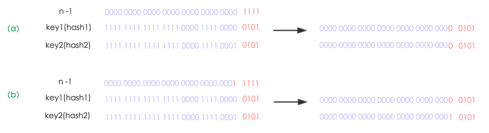
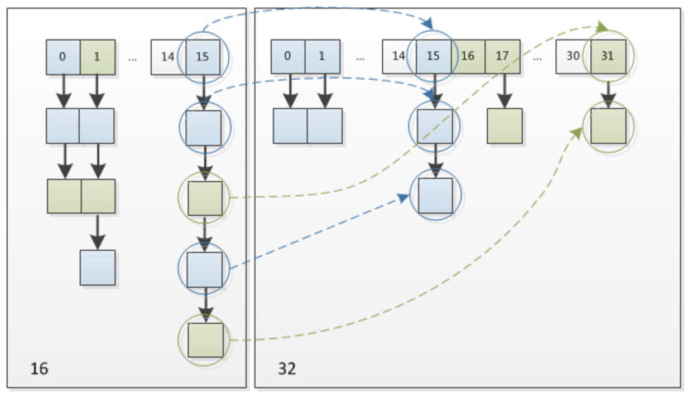

hashCode
源码文档
这是Object类对hashCode方法的描述1
2
3
4
5
6
7
8
9
10
11
12
13
14
15
16
17
18
19
20
21
22
23
24
25
26
27
28
29
30
31
32
33
34
35/**
* Returns a hash code value for the object. This method is
* supported for the benefit of hash tables such as those provided by
* {@link java.util.HashMap}.
* <p>
* The general contract of {@code hashCode} is:
* <ul>
* <li>Whenever it is invoked on the same object more than once during
* an execution of a Java application, the {@code hashCode} method
* must consistently return the same integer, provided no information
* used in {@code equals} comparisons on the object is modified.
* This integer need not remain consistent from one execution of an
* application to another execution of the same application.
* <li>If two objects are equal according to the {@code equals(Object)}
* method, then calling the {@code hashCode} method on each of
* the two objects must produce the same integer result.
* <li>It is <em>not</em> required that if two objects are unequal
* according to the {@link java.lang.Object#equals(java.lang.Object)}
* method, then calling the {@code hashCode} method on each of the
* two objects must produce distinct integer results. However, the
* programmer should be aware that producing distinct integer results
* for unequal objects may improve the performance of hash tables.
* </ul>
* <p>
* As much as is reasonably practical, the hashCode method defined by
* class {@code Object} does return distinct integers for distinct
* objects. (This is typically implemented by converting the internal
* address of the object into an integer, but this implementation
* technique is not required by the
* Java™ programming language.)
*
* @return a hash code value for this object.
* @see java.lang.Object#equals(java.lang.Object)
* @see java.lang.System#identityHashCode
*/
翻译一下
hashcode方法返回该对象的哈希码值。支持该方法是为哈希表提供一些益处，例如，java.util.HashMap。
hashCode 的常规协定是：
在 Java 应用程序执行期间，在同一对象上多次调用 hashCode 方法时，必须一致地返回相同的整数，前提是对象上 equals 比较中所用的信息没有被修改。从某一应用程序的一次执行到同一应用程序的另一次执行，该整数无需保持一致。
如果根据 equals(Object) 方法，两个对象是相等的，那么在两个对象中的每个对象上调用 hashCode 方法都必须生成相同的整数结果。
以下情况不 是必需的：如果根据 equals(java.lang.Object) 方法，两个对象不相等，那么在两个对象中的任一对象上调用 hashCode 方法必定会生成不同的整数结果。但是，程序员应该知道，为不相等的对象生成不同整数结果可以提高哈希表的性能。
实际上，由 Object 类定义的 hashCode 方法确实会针对不同的对象返回不同的整数。（这一般是通过将该对象的内部地址转换成一个整数来实现的，但是 Java编程语言不需要这种实现技巧。）
当equals方法被重写时，通常有必要重写 hashCode 方法，以维护 hashCode 方法的常规协定，该协定声明相等对象必须具有相等的哈希码。
分析：
1.hashCode是为了方便哈希表而设计的，能让查找更加快捷。
2.hashCode不要求在不同的环境下运行都相同，但每次程序运行时，都应相同。
3.对象根据equal相等是他们的hashCode相等充分不必要条件
4.默认的hashCode方法会根据对象的内存地址返回一个整数，但这时ＪＶＭ实现的，不用我们操心。
5.hashCode方法和equals方法最好同时重写
归纳：hashCode是用于查找使用的，而equals是用于比较两个对象的是否相等
示例：
例如内存中有这样的位置
0 1 2 3 4 5 6 7
而我有个类，这个类有个字段叫ID,我要把这个类存放在以上8个位置之一，如果不用hashcode而任意存放，那么当查找时就需要到这八个位置里挨个去找，或者用二分法一类的算法。
但如果用hashcode那就会使效率提高很多。
我们这个类中有个字段叫ID,那么我们就定义我们的hashcode为ID％8，然后把我们的类存放在取得得余数那个位置。比如我们的ID为9，9除8的余数为1，那么我们就把该类存在1这个位置，如果ID是13，求得的余数是5，那么我们就把该类放在5这个位置。这样，以后在查找该类时就可以通过ID除 8求余数直接找到存放的位置了。
但是如果两个类有相同的hashcode怎么办那（我们假设上面的类的ID不是唯一的），例如9除以8和17除以8的余数都是1，那么这是不是合法的，回答是：可以这样。那么如何判断呢？在这个时候就需要定义 equals了。
也就是说，我们先通过 hashcode来判断两个类是否存放某个桶里，但这个桶里可能有很多类，那么我们就需要再通过 equals 来在这个桶里找到我们要的类。
那么。重写了equals()，为什么还要重写hashCode()呢？
想想，你要在一个桶里找东西，你必须先要找到这个桶啊，你不通过重写hashcode()来找到桶，光重写equals()有什么用啊
实际上HashMap就是这么实现的，桶放在数组上，每个桶是一个链表或红黑树
HashMap
文档
HashMap的描述很长，只贴出最关键的部分1
2
3
4
5
6
7
8
9
10
11
12
13
14
15
16
17
18
19
20
21
22
23
24
25
26
27
28
29
30
31**
* Hash table based implementation of the <tt>Map</tt> interface. This
* implementation provides all of the optional map operations, and permits
* <tt>null</tt> values and the <tt>null</tt> key. (The <tt>HashMap</tt>
* class is roughly equivalent to <tt>Hashtable</tt>, except that it is
* unsynchronized and permits nulls.) This class makes no guarantees as to
* the order of the map; in particular, it does not guarantee that the order
* will remain constant over time.
*
* <p>This implementation provides constant-time performance for the basic
* operations (<tt>get</tt> and <tt>put</tt>), assuming the hash function
* disperses the elements properly among the buckets. Iteration over
* collection views requires time proportional to the "capacity" of the
* <tt>HashMap</tt> instance (the number of buckets) plus its size (the number
* of key-value mappings). Thus, it's very important not to set the initial
* capacity too high (or the load factor too low) if iteration performance is
* important.
*
* <p>An instance of <tt>HashMap</tt> has two parameters that affect its
* performance: <i>initial capacity</i> and <i>load factor</i>. The
* <i>capacity</i> is the number of buckets in the hash table, and the initial
* capacity is simply the capacity at the time the hash table is created. The
* <i>load factor</i> is a measure of how full the hash table is allowed to
* get before its capacity is automatically increased. When the number of
* entries in the hash table exceeds the product of the load factor and the
* current capacity, the hash table is <i>rehashed</i> (that is, internal data
* structures are rebuilt) so that the hash table has approximately twice the
* number of buckets.
*
public class HashMap<K,V> extends AbstractMap<K,V>
implements Map<K,V>, Cloneable, Serializable
翻译：
基于哈希表实现Map接口，这个实现提供了所有可用的Map操作而且允许键和值为null。HashMap除了不同步，允许null外和HashTable基本相同，此类不保证存放元素的顺序，也不保证顺序随时间推移保持不变。
HashMap提供了恒定时间性能的get和put操作，假设hash函数将元素适当分散在桶中，则迭代器遍历集合所需要的时间与容量成正比。所以，如果迭代的性能很重要得话，不要让初始容量值特别高(或负载太小)非常关键。
一个HashMap实例有两个参数影响他的性能，初始容量和负载因子。初始容量就是哈希表创建时的容量。负载因子是在哈希表增加项时衡量哈希表有多满的参数，当哈希表的条目数大于负载因子和当前容量的乘积，哈希表就会重建内部数据结构，使哈希表大概拥有两倍原来的桶数。
分析
1.继承AvstractMap
2.实现
属性
1 | //默认容量,8 |
存储的节点
1 | static class Node<K,V> implements Map.Entry<K,V> { |
可以看出每个节点都有next属性，并重写了hashCode和equals方法。
构造函数
1 | public HashMap(int initialCapacity, float loadFactor) { |
可以看到HashMap有三个构造函数，可对初始容量和负载因子进行初始化。
再看看tableSizeFor函数。1
2
3
4
5
6
7
8
9
10
11
12/**
* Returns a power of two size for the given target capacity.
*/
static final int tableSizeFor(int cap) {
int n = cap - 1;
n |= n >>> 1;
n |= n >>> 2;
n |= n >>> 4;
n |= n >>> 8;
n |= n >>> 16;
return (n < 0) ? 1 : (n >= MAXIMUM_CAPACITY) ? MAXIMUM_CAPACITY : n + 1;
}
这里先进行位运算，让n变成1111111……，再+1，如注释所说返回目标容量对应的2的幂次方。
put()方法
1 | public V put(K key, V value) { |
对key做hash运算，看看hash方法1
2
3
4static final int hash(Object key) {
int h;
return (key == null) ? 0 : (h = key.hashCode()) ^ (h >>> 16);
}
可以看到,key为null时也有hash值，所以HashMap的key可为null。
这里首先计算出key的hashCode()为h，然后与h无条件右移16位后的二进制进行按位异或(^)得到最终的hash值，这个hash值就是键值对存储在数组中的位置。
然后是putVal()方法1
2
3
4
5
6
7
8
9
10
11
12
13
14
15
16
17
18
19
20
21
22
23
24
25
26
27
28
29
30
31
32
33
34
35
36
37
38
39
40
41
42final V putVal(int hash, K key, V value, boolean onlyIfAbsent,
boolean evict) {
Node<K,V>[] tab; Node<K,V> p; int n, i;
if ((tab = table) == null || (n = tab.length) == 0)
n = (tab = resize()).length;
if ((p = tab[i = (n - 1) & hash]) == null)
tab[i] = newNode(hash, key, value, null);
else {
Node<K,V> e; K k;
if (p.hash == hash &&
((k = p.key) == key || (key != null && key.equals(k))))
e = p;
else if (p instanceof TreeNode)
e = ((TreeNode<K,V>)p).putTreeVal(this, tab, hash, key, value);
else {
for (int binCount = 0; ; ++binCount) {
if ((e = p.next) == null) {
p.next = newNode(hash, key, value, null);
if (binCount >= TREEIFY_THRESHOLD - 1) // -1 for 1st
treeifyBin(tab, hash);
break;
}
if (e.hash == hash &&
((k = e.key) == key || (key != null && key.equals(k))))
break;
p = e;
}
}
if (e != null) { // existing mapping for key
V oldValue = e.value;
if (!onlyIfAbsent || oldValue == null)
e.value = value;
afterNodeAccess(e);
return oldValue;
}
}
++modCount;
if (++size > threshold)
resize();
afterNodeInsertion(evict);
return null;
}
首先分析参数
- hash: key的hash值
- key: 存储的key
- value：存储的value
- onlylfAbsent：表示是否要替换相同的value，true表示不替换
- evict如果是false，表示数组是新增的
然后一点一点看，如果HashMap为空，则调用resize进行初始化.1
2if ((tab = table) == null || (n = tab.length) == 0)
n = (tab = resize()).length;
得到当前位置1
i = (n - 1) & hash
可以看出来这里把hash高位全过滤掉了
接着，根据长度-1和hash值进行按位与运算，算出hash值对应于数组中的位置，从tab中将这个位置上面的内容取出，判断为null时，在这个位置新增一个Node。代码如下：1
2
3
4
5
6
7
8
9
10
11
12
13
14
15
16
17
18
19
20if ((p = tab[i = (n - 1) & hash]) == null)
tab[i] = newNode(hash, key, value, null);
// Create a regular (non-tree) node
Node<K,V> newNode(int hash, K key, V value, Node<K,V> next) {
return new Node<>(hash, key, value, next);
}
图示：
0 0
| |
1 -> null 1 - > null
| |
2 -> null 2 - > null
| |
..-> null ..- > null
| |
i -> null i - > new node
| |
n -> null n - > null
如果同样的位置取到了数据，也就是这个hash值对应数组的位置上面已经有了键值对存在，这时候我们就需要做一些动作了。首先，我们判断这个Node，也就是p的hash值是否与传入的hash相等，然后接着判断key是否相等(这里判断key是否相等，用了一个或运算)。如果判断通过，表示要传入的key-val键值对就是tab[i]位置上面的键值对，直接替换即可，不用管后面是链表还是红黑树。代码如下：1
2
3
4Node<K,V> e; K k;
if (p.hash == hash &&
((k = p.key) == key || (key != null && key.equals(k))))
e = p;
如果tab[i]的key不是我们传入的key，下面我们首先要判断p这个Node是不是红黑树，如果是红黑树，直接向红黑树新增一个数据。向红黑树新增数据的代码我们后续再解析，目前先不进行分析。代码如下：1
2else if (p instanceof TreeNode)
e = ((TreeNode<K,V>)p).putTreeVal(this, tab, hash, key, value);
下面，当p是单向链表时，我们遍历链表进行插入等操作。找到链表的尾部，将节点新增到尾部。如果链表的长度大于等于红黑树化的阈值-1，就将桶(也就是链表)转成红黑树存储数据。如果在链表中还存在相同的key，直接替换旧的value即可。1
2
3
4
5
6
7
8
9
10
11
12
13
14
15
16
17
18
19
20
21
22
23
24
25
26
27
28
29
30
31
32for (int binCount = 0; ; ++binCount) {
if ((e = p.next) == null) {
p.next = newNode(hash, key, value, null);
if (binCount >= TREEIFY_THRESHOLD - 1) // -1 for 1st
treeifyBin(tab, hash);
break;
}
if (e.hash == hash &&
((k = e.key) == key || (key != null && key.equals(k))))
break;
p = e;
}
if (e != null) { // existing mapping for key
V oldValue = e.value;
if (!onlyIfAbsent || oldValue == null)
e.value = value;
afterNodeAccess(e);
return oldValue;
}
0 0
| |
1 -> null 1 - > null
| |
2 -> null 2 - > null
| |
..-> null ..- > null
| |
i -> old i - > old - > new
| |
n -> null n - > null
最后，如果当前键值对数量超过阀值，进行resize()扩容1
2if (++size > threshold)
resize();
resize()方法
1 | /** |
可以看到resize的文档，这是一个初始化或扩容的方法
只看最重要的部分1
2
3
4
5
6
7
8
9
10
11
12
13
14
15
16
17
18
19
20
21
22
23
24
25
26
27
28
29
30
31
32
33
34
35
36
37
38
39
40
41
42
43
44/遍历老的数组
for (int j = 0; j < oldCap; ++j) {
Node<K,V> e;
if ((e = oldTab[j]) != null) {
oldTab[j] = null;
if (e.next == null)
//如果链表中只有一个数据，直接重新计算hash值，放入新的数组中
newTab[e.hash & (newCap - 1)] = e;
//如果e是红黑树，需要将红黑树拆分后放入新的数组中
else if (e instanceof TreeNode)
((TreeNode<K,V>)e).split(this, newTab, j, oldCap);
else { // preserve order
Node<K,V> loHead = null, loTail = null;
Node<K,V> hiHead = null, hiTail = null;
Node<K,V> next;
do {
next = e.next;
if ((e.hash & oldCap) == 0) {
if (loTail == null)
loHead = e;
else
loTail.next = e;
loTail = e;
}
else {
if (hiTail == null)
hiHead = e;
else
hiTail.next = e;
hiTail = e;
}
} while ((e = next) != null);
if (loTail != null) {
loTail.next = null;
newTab[j] = loHead;
}
if (hiTail != null) {
hiTail.next = null;
newTab[j + oldCap] = hiHead;
}
}
}
}
}
前面说到过，HashMap扩容时容量变为2的次幂，原来元素的索引在e.hash & (oldCap - 1)，现在为e.hash & (newCap - 1)
所以，元素的位置要么是在原位置，要么是在原位置再移动2次幂的位置。看下图可以明白这句话的意思，n为table的长度，图（a）表示扩容前的key1和key2两种key确定索引位置的示例，图（b）表示扩容后key1和key2两种key确定索引位置的示例，其中hash1是key1对应的哈希与高位运算结果。


可以看到连重新计算hash值都不用，设计得非常巧妙